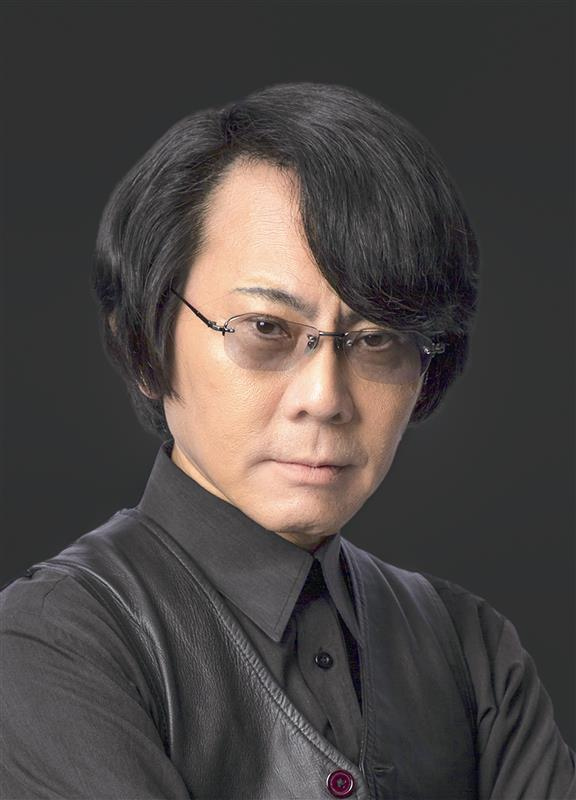

About
本イベントは
「高島市 × 麗澤大学 包括連携協定 記念」
および
「公益財団法人モラロジー道徳教育財団 創立100周年記念 『つなぐ』プロジェクト」
の一環として開催するものです。
高島出身の

世界的ロボット研究者・石黒浩教授
を迎え「人間らしさ」「テクノロジー」「地域の未来」をテーマに、
高島を一つのモデルにしながら、これからの社会のあり方を多角的に考える対話型イベントです。
高校生・大学生・地域がともに未来を描き、次世代へとつながる新たな学びと対話の場を創出します。
Information
- Date 2026年7月20日 (月/祝)
- Time 13:30 START
- Venue 高島市民会館(滋賀県高島市今津町1-3-1)
- Price 無料
Access
近江今津駅より徒歩5分